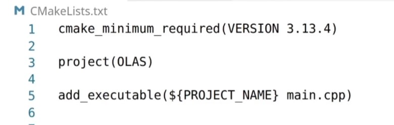
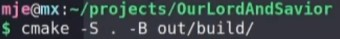

What is CMake?
CMake is a build system, specifically for C/C++, that uses text files called CMakeLists.txt to generate build files. It generates make files which defines a set of tasks to be executed. CMake is especially useful for larger projects it is very difficult to create MakeFiles by hand.Basic Commands in CMakeLists.txt
1) cmake_minimum_required(VERSION 3.13)
- Specifies the minimum required version of cmake.2) project(Test)
- Defines the project name3) add_executable(${PROJECT_NAME} testmain.cpp)
- Adds the executable target, Test, which will be built from testmain.cpp (${PROJECT_NAME} references the project name which, in this case, would be Test)Basic CMake Project
1) Create A CMakeLists.txt File
- Create a CMakeLists.txt file either through terminal,cmd, etc or by right clicking in a folder- Using the commands above, specify the minimum required version, define the project name, and add an executable. (replace testmain.cpp with desired source code)

2) Run CMake
- In terminal or cmd type: cmake -S (path to source) -B (path to build). Paths should be relative to current position.- Make sure that the root CMakeLists file you created is in the source directory
- For example, let the path to the build directory be ~/projects/test/build and the root CMakeLists file be in the test directory.Assuming you are currenlty in the test directory, the command may look like this
cmake -S . -B build/
- This command will create a target located in the build directory with the project name defined in step 1. When the target file is run, it should print out the output of your code.

In the example image above, the source directory would be the folder OurLordAndSavior and the path to the build folder would be projects/OurLordAndSavior/out/build/
Libraries
-Libraries are extremley useful with larger project becomes as they help to section the code into different libraries and executable CMake targets. This makes projects easiere to read and more organized.- To make a library, use the command:
add_library(target_name source_file.cpp)
- There are three typoes of libraries: STATIC, SHARED, and MODULE. If non are selected, the value of BUILD_SHARED_LIBS will be utilized to pick between STATIC and SHARED.